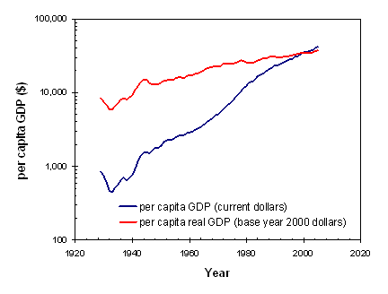
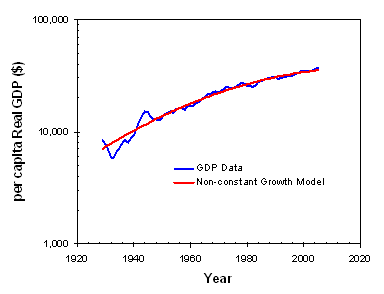

February 2, 2006
Economic progress: politicians promise it by increasing spending or by cutting spending, by subsidizing an industry or by deregulating it, by raising interest rates or by lowering them, by cutting taxes or by balancing the budget. The formula for economic growth is anything but obvious, especially since deep down I care more about my economic growth than I do about yours. One thing that all of these policy positions have in common is that they measure economic progress in basically the same way – by using the Gross Domestic Product (GDP).
Gross Domestic Product is the market value of goods and services produced by labor and property in the United States, regardless of nationality. It is distinct from the older Gross National Product (GNP), which is the market value of goods and services produced by labor and property supplied by U.S. residents, regardless of where they are located. The GDP replaced the GNP as the official measure of US production in 1991 because it is not only easier to measure, but more meaningful in a global economy.
GDP is a measure of economic production in the country, but there are two basic ways in which the amount of production is estimated. In the expenditures approach, you measure the amount that people and the government spend on final, finished goods, add to it the amount businesses invest in plants and equipment, then add the net exports of the country. If everything produced in the country is actually consumed, then a measurement of consumption is equivalent to a measurement of production.
GDP = consumption (personal + government spending) + business (non-financial) investment + net exports (exports - imports)
To avoid double counting, GDP measures only final goods and services (sales to consumers, not sales between companies). Thus, spending by business on goods is not counted since supposedly those businesses will add value to those goods and resell them to consumers. Savings (financial investments) are not counted in the GDP.
The second, less common approach is to measure earnings rather than spending. By adding up people’s wages and company’s profits, and assuming people spend all of their incomes, then this total earnings is also equivalent to the total production of the country. Of course, there are a lot of details that I am completely ignoring, so if you must know about them read the international standard for GDP measurement found in the book System of National Accounts (1993).
It is important to remember the definition of GDP – it measures total production in a country. It is a metric of economic activity. As such, its exact value has very little relevance. Instead, people are mostly interested in changes in GDP, or comparisons between countries or at different times. Since the change in GDP over time is important, one must carefully consider the effects of inflation. An inflation rate of 5% would automatically result in a 5% increase in GDP (assuming your inflation metric is reasonably representative of prices across the entire economy) even if no real increase in economic activity occurred. Thus, GDP numbers are almost always corrected for inflation (this inflation-corrected GDP is called the “real GDP”).
But inflation corrections are still not enough. Over time, the population of a country changes. One expects that more people will generate more economic activity. As such, real GDP is very often divided by the population of the country to obtain the per capita real GDP.

Using GDP data, some of the more important trends in our economy can be described. From 1929 till today, there have been three major economic cycles. The first cycle begins with the Great Depression. From 1929 to 1933, per capita real GDP shrank by a painful 31%. Fortunately, this massive decline was followed by 11 years of robust growth. From 1933 to 1944, the average annual increase in per capita real GDP was 9%. The economy actually grew faster than it shrank. By 1944 the per capita real GDP was more than double what it had been before the start of the Great Depression.
The second cycle began with a major economic readjustment in the US after World War II. From 1944 to 1949 the economy shrank by 16% per capita. Again, though, the contraction was followed by stable and sustained growth. From 1949 till 1978 the per capita real GDP increased by an average of 2.7% per year, with only a few very small and short-lived declines along the way. Most people consider this 30 year period of relatively stable per capita growth to be the golden years of the US economy.
Double digit inflation in the late 1970s and early 1980s took its toll on the economy. The third cycle began with a recession: the economy shrank 8% between 1978 and 1982 based on per capita real GDP. Since then, we’ve had a few small downturns but mostly modest growth averaging 1.4% per year through 2005.
The patterns have been similar: about a four year shrinking of the economy, then growth high enough to recapture that lost value in a few years. But significantly, these cycles have been flattening out. The three depression/recessions showed 31%, 16%, and then 8% shrinks in the economy – each dip is only half as bad as the previous one. But then the recoveries are slower as well – 9%, 2.7%, and then 1.4% annual growth. It seems that we are gaining better control over the ups and downs of our economy, but with the consequence of slower average growth.

A model that allows the growth rate to change linearly with time matches the per capita real GDP data quite well (see chart above). In this model, the average annual growth rate in 1930 was about 3.5%, slowing continuously through the years until reaching about 0.7% today. If such a trend were to continue, in ten years (2015) the per capita real GDP growth rate would be down to 0.3%.
But there has been an unspoken assumption permeating the entire discussion so far. One of the most common uses of the per capita real GDP is as an indicator of standard of living. The assumption is that a 2% increase in the US per capita real GDP represents a 2% increase in the standard of living of an average American. While this assumption is for the most part reasonable, there are some problems with using GDP as an indicator of standard of living.
First, GDP only measures production and consumption, not the level of utility people gain from producing and consuming. There is much economic activity (for example, replacing a low quality product, or repairing damage from war or natural disaster) that does not improve quality of life (compared to having a high quality product to begin with, or no war). The result can be a very high GDP combined with low customer satisfaction.
Related to this disconnect between GDP and utility, the GDP doesn't measure the sustainability of growth (GDP will rise when over-exploiting natural resources or by misallocating investments). For example, economic growth at the expense of environmental degradation pushes out clean up costs to the future. Which is the second major theme of problems with GDP – there are plenty of activities that improve today’s GDP at the expense of tomorrow’s. Deficit spending, a housing bubble or stock bubble can cause higher GDP due to higher consumption, mortgaging the future for present growth.
The third problem with GDP is that it is a national average, and with all metrics that are averages it ignores the importance of the distribution of economic wealth or income. The average can increase while the median is going down if all of the benefits of economic growth go to the high end of the economic spectrum. This can easily happen when the top 1% of income earners make orders of magnitude more money than the median income earner.
But probably the greatest difficulty in using GDP as a measure of standard of living is the obvious reality that quality of life is determined by many things other than physical goods (economic or not). Unfortunately, attempts to correct for this type of deficiency (using the Genuine Progress Indicator, GPI, for example) tend to be wholly arbitrary, defining quality of life in a way that would probably displease more people than it would please. It seems that for all its faults, GDP is about as good as it gets as a general metric of a country’s economic status. Improvements could and should be made, but the users of this metric should also understand more clearly its limitations. GDP growth does not necessarily, or even generally, equate to greater prosperity for all.
Accompanying Data
Online References
Bureau of Labor Statistics: Consumer Price Index
Bureau of Economic Analysis
Wikipedia: Gross domestic product
Chris Mack is a writer in Austin, Texas.